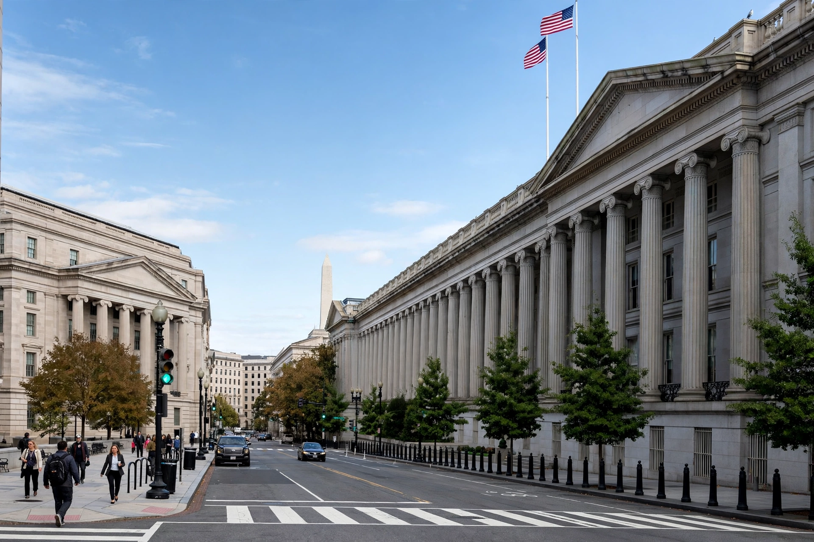

The Office of Foreign Assets Control (OFAC) is a financial intelligence and enforcement agency of the United States Department of the Treasury. It administers and enforces economic and trade sanctions in support of U.S. national security and foreign policy objectives.

OFAC's predecessor, the Office of Foreign Funds Control, was created in 1940 to prevent Nazi use of assets of occupied countries held in the United States. OFAC itself was created in 1950 after China entered the Korean War and President Truman declared a national emergency and froze Chinese and North Korean assets.
Under presidential national emergency powers, largely under the International Emergency Economic Powers Act (IEEPA), OFAC prohibits transactions, freezes assets under U.S. jurisdiction, and maintains lists including the Specially Designated Nationals and Blocked Persons List (SDN List). Sanctions programmes have targeted countries such as Cuba, Iran, North Korea, Russia and Venezuela, as well as terrorists, narcotics traffickers and proliferators of weapons of mass destruction.
OFAC can impose significant civil penalties on U.S. and, in some cases, foreign persons who violate sanctions. It also issues general and specific licences authorising otherwise prohibited transactions, for example for humanitarian goods.